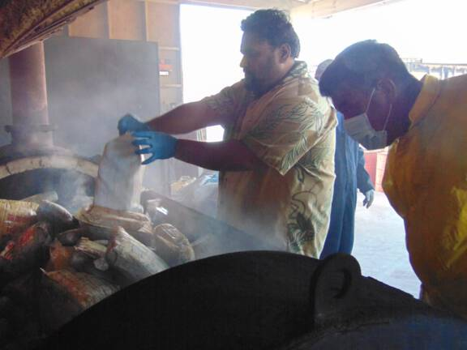
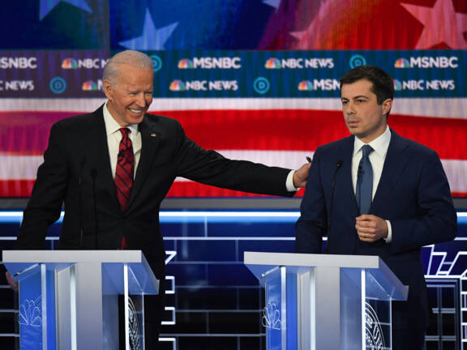

NOS Nieuws - Buitenland - Vandaag, 10:37
Kabinet grijpt in met strengere coronaregels voor grote winkelketens
Het kabinet komt met strengere coronaregels voor grote winkelketens. Volgens Haagse bronnen wordt er rekening mee gehouden dat filialen van winkelketens toch moeten dichtgaan. Op allerlei niveaus wordt daar op dit moment over overlegd en minister De Jonge kondigde voor later vandaag een "nadere mededeling" aan.
Ketens als Action en Wibra hebben gezegd dat ze hun deuren voor klanten openen die producten willen kopen die als essentieel worden beschouwd, zoals schoonmaakmiddelen, hygiëneproducten en etenswaren. Dat leidt tot veel irritatie bij een deel van de Tweede Kamer en ook in het kabinet wordt de situatie met veel zorgen gevolgd.
Voor een overleg tussen de betrokken bewindslieden zei minister De Jonge dat dit niet het moment is om de randen van de regels op te zoeken: "De ernst van de situatie vraagt van ons allemaal maximale inspanning om onze contacten te beperken; dat vraagt solidariteit van ons allemaal."
Er is veel onduidelijkheid over welke winkels nou precies open mogen en wat essentieel is en wat niet. Volgens de richtlijnen van het Rijk zou een filiaal open mogen als het meer dan 70 procent van zijn omzet uit 'essentiële diensten' haalt. En als een winkel voor die producten een omzet van 30 procent haalt, zou een deel van de winkel open mogen. Maar op de website van de Rijksoverheid waar hier uitleg over wordt gegeven, zijn de percentages inmiddels weggehaald.
Werkgeversorganisatie VNO-NCW snapt dat het kabinet met strengere regels komt. "De lockdown is onder stoom en kokend water tot stand gekomen", zegt voorzitter Ingrid Thijssen in het radioprogramma 1op1. "Je kunt ondernemers niet kwalijk nemen dat ze binnen de regels toch nog wat proberen te verkopen. Er was veel onduidelijk. De verantwoording ligt bij het kabinet om aan te geven wat wel mag en wat niet."
Bekijk ook
Biden kiest 'probleemoplosser' Pete Buttigieg als transportminister

Joe Biden heeft zijn voormalig tegenstander in de strijd om de Democratische nominatie Pete Buttigieg gekozen als minister van Transport in zijn aanstaande kabinet.
Biden kiest 'probleemoplosser' Pete Buttigieg als transportminister
Joe Biden heeft zijn voormalig tegenstander in de strijd om de Democratische nominatie Pete Buttigieg gekozen als minister van Transport in zijn aanstaande kabinet.
Deel dit artikel:
Biden kiest 'probleemoplosser' Pete Buttigieg als transportminister
Joe Biden heeft zijn voormalig tegenstander in de strijd om de Democratische nominatie Pete Buttigieg gekozen als minister van Transport in zijn aanstaande kabinet.
Biden kiest 'probleemoplosser' Pete Buttigieg als transportminister
Joe Biden heeft zijn voormalig tegenstander in de strijd om de Democratische nominatie Pete Buttigieg gekozen als minister van Transport in zijn aanstaande kabinet.
Biden kiest 'probleemoplosser' Pete Buttigieg als transportminister
Joe Biden heeft zijn voormalig tegenstander in de strijd om de Democratische nominatie Pete Buttigieg gekozen als minister van Transport in zijn aanstaande kabinet.